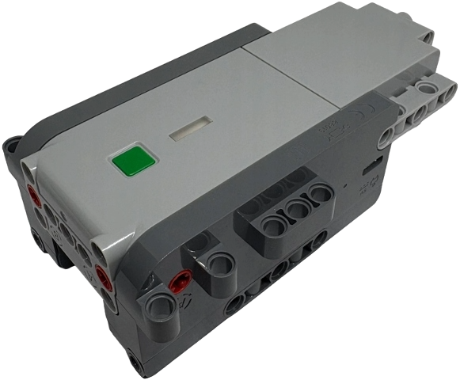

LEGO® Technic™ Move Hub · part 88019
Thirteen bytes
and your car moves.

One brick: two drive motors, a steering motor, its own radio. Chrome writes thirteen bytes to it over Bluetooth — with an Xbox controller if you have one. No app, no install.
- DriveGamepad or on screen, in four modes — tank and per-motor included.
- Steer your wayYou set straight, throw and direction.
- Record a rideDrive by hand, get the drive back as a script.
- Script itShort JavaScript programs, sandboxed.
- Feel itThe pad rumbles with the drive, and hits when the car does.
- See itBattery, tilt, 3D orientation, raw protocol log.
- The set it came in 42214 Lamborghini Revuelto, 42176 Porsche GT4, built as designed. drives
- A model you built Any shape around the same hub. No set profile, no calibration sweep — you set the steering zero and the throw. drives
- The official app Drives the hub through one set's profile. Change the rack and its calibration stops describing the model. can't
01 What it does
The page is the controller. Once a hub connects, the same page becomes a dashboard of seven tabs — Drive, Setup, Lights, Hub, Motion, Macros and Debug — reachable from the tab bar or the number keys.
Driving
| Four drive modes | Independent puts each drive motor on its own control, so the second one can raise, wind or tip something instead of driving. Tracked counter-rotates the pair from one stick — tank steering, no rack in the model at all. Linked drives both together with steering on the page's own position loop. The combined frame is the hub's own thirteen bytes. |
|---|---|
| Any gamepad | Xbox, PlayStation, Bluetooth or USB — anything the browser exposes. Every binding is remappable by control rather than by index, with modifier layers for a second function on the same button. Touch controls do the same job without one. |
| Steering you set | Where straight is, how far it turns — 5° to 720° — gain, deadband, auto-return on release, inversion, and a runaway cut-out that kills the motor when the position feedback stops matching the command. Direction and brake-or-coast are set per motor. |
| Lights | Six lamp outputs on the model's own light pipes, plus the hub's RGB status LED. |
Recording and scripting
| Record a ride | Arm the recorder in the Macros tab, drive the car by hand, and the page writes the drive back out as a macro — one command per stretch of steady driving, with a comment on each line saying what it was and what the hub reported while it happened. A tolerance control re-writes the same ride tighter or looser. Replay is open loop: straights repeat well, turns drift. |
|---|---|
| Macros | Short JavaScript programs — drive, motors, lights, sensor reads, waits — run in a worker against a 36-call API, with raw frame writes behind a per-macro flag. Editor, command palette and samples in one panel. |
What it tells you
| Rumble | If the pad has motors, it carries the drive: a bed that rises with speed and steering load, and a single hit when the car strikes something or the crash guard cuts the motors. Off until you switch it on. |
|---|---|
| Instruments | Battery, tilt and motor readings; the hub's own orientation drawn in 3D and as roll, pitch and yaw; and the raw LWP 3.0 traffic in a log you can read. |
| Crash guard | The accelerometer watches for impacts and cuts the motors on its own. It leaves the loop armed, so the pad stays yours. |
02 The hardware
| Drive motors | 2, planetary geared, optical encoders |
|---|---|
| Steering motor | 1, planetary geared, magnetic position sensor |
| Lamp outputs | 6, individually addressable, on internal light pipes |
| Status LED | RGB, 10 colours |
| Motion | accelerometer, gyroscope, tilt, gesture |
| Controller | TI CC2642 — Bluetooth and motor control on one chip |
| Motor drivers | DRV8411 dual H-bridge per motor, bridges paralleled |
| Power | USB-C, rechargeable |
| External ports | none — everything is on board |
Which revision you have
- 42214 The revised hub, and the one shipping now Everything here was built and tested against it.
- 42176 Where the hub debuted, in its original revision Not tested here, but the same hub and the same protocol.
Newer sets carrying the same hub should work too.
03 Your own model
A model you built yourself drives from this page. It does not have to look like the set the hub came in, and nothing here has to be told which set that was.
The official app cannot do this. It drives the hub through the profile of
one particular set, and that profile carries a steering calibration — change
the rack, the throw or the gearing and the calibration no longer describes
the model. Reviewing 42214 for New Elementary, Toby Mac put it as
the hub can't be used in other apps for custom programming
.
This page has no set profile to fail. Three of its four drive modes write to the hub's motor ports directly — no arming, no calibration sweep, no assumption about what the wheels are attached to.
Only the fourth mode, the hub's own combined frame, sweeps the rack to its end stops on arming — so keep that one for set-shaped steering and use one of the other three for a rebuild.
What the builder sets, not the set
- Where straight is Jog the rack by hand or by button until the wheels point straight, then press Set zero. The zero is held in software, not read from the hub.
- How far it turns Maximum angle anywhere from 5° to 720°, and the rest of the steering settings are the builder's too.
- Which way each motor runs Direction is set per motor, and brake or coast on release is chosen per motor too.
Why not the usual alternatives
Pybricks cannot be installed on this hub: its documentation states the
hub requires a special password to update the firmware
, and it can only
be driven as a peripheral from a second Pybricks hub you also have to own.
BrickController 2 lists SBrick, BuWizz and the Powered Up, Boost,
Technic and WeDo 2.0 hubs — not this one. SBrick and BuWizz are
separate receivers, so they replace the hub rather than use the three motors
already inside it. A browser speaking LEGO Wireless Protocol 3.0 needs no
extra hardware and no firmware change.
Pybricks on the Technic Move Hub New Elementary's 42214 review BrickController 2's supported receivers
04 How it was worked out
The hub speaks LEGO Wireless Protocol 3.0 over a single Bluetooth characteristic. Ports are not hardcoded here — they are discovered at runtime from the hub's own inventory of what is attached.
The drive frame took longer. Four separate attempts to find it by writing bytes and watching for movement produced nothing at all, because this port acknowledges anything well-formed whether or not it acts on it. What settled it was asking the hub to describe its own port modes — and then noticing that the lights field carries two initialisation commands the hub requires before it will accept any drive frame.
An earlier version of this code masked those exact bytes out, on the grounds that a published note called them dangerous. That safety measure is the reason nothing worked for a day.
Benedettelli's reference notes LEGO's protocol documentation
05 What you need
| Hub | Technic Move Hub. It advertises as “Technic Move”. |
|---|---|
| Browser | Chrome or Edge on Android, macOS, Windows or ChromeOS. Safari and Firefox do not implement Web Bluetooth; on iOS every browser uses Safari's engine, so an iPhone needs one such as Bluefy. |
| Controller | Optional. Any pad the browser can see. |
| Rumble | Chrome, Edge and Safari 16.4+ can vibrate a pad; Firefox cannot. |
| Setup | None. No pairing in system settings, no app, no account. |
06 Before you drive
This moves a real machine. These three were earned, not imagined.
- The stops are automatic, not a button. Losing the link, losing the pad, hiding the tab, a collision or any error inside the control loop each cut the motors on their own.
- Connecting calibrates the steering. The default mode is the hub's own combined frame, and arming it sweeps the rack to both end stops — so leave the front wheels free to turn. In a model of your own, switch the mode first: the other three never sweep.
- Releasing a control stops what it drove. The touch controls and the pad both hand the motors back the moment you let go.